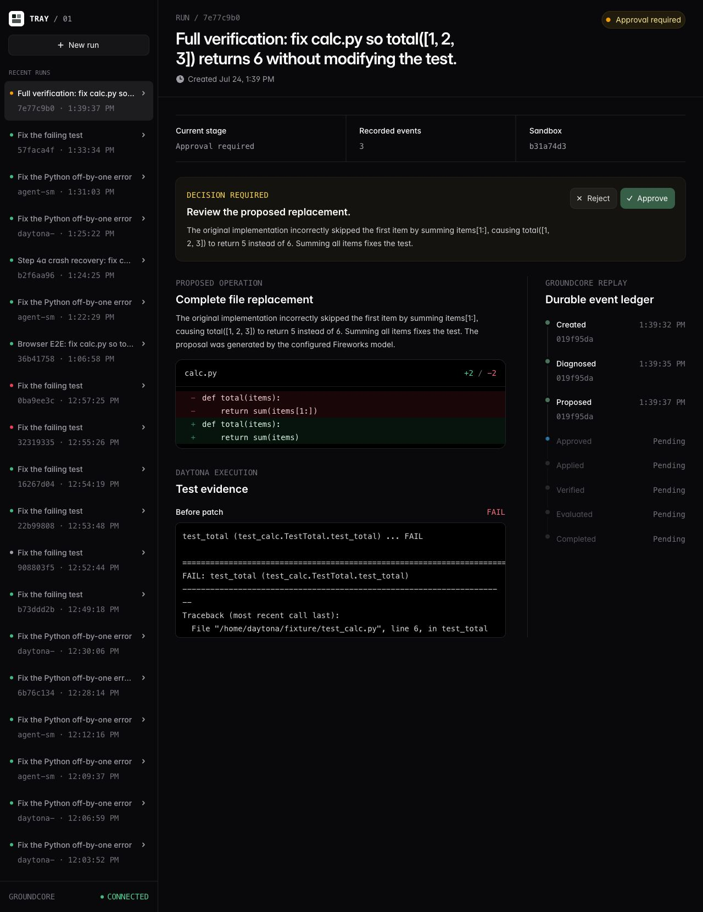
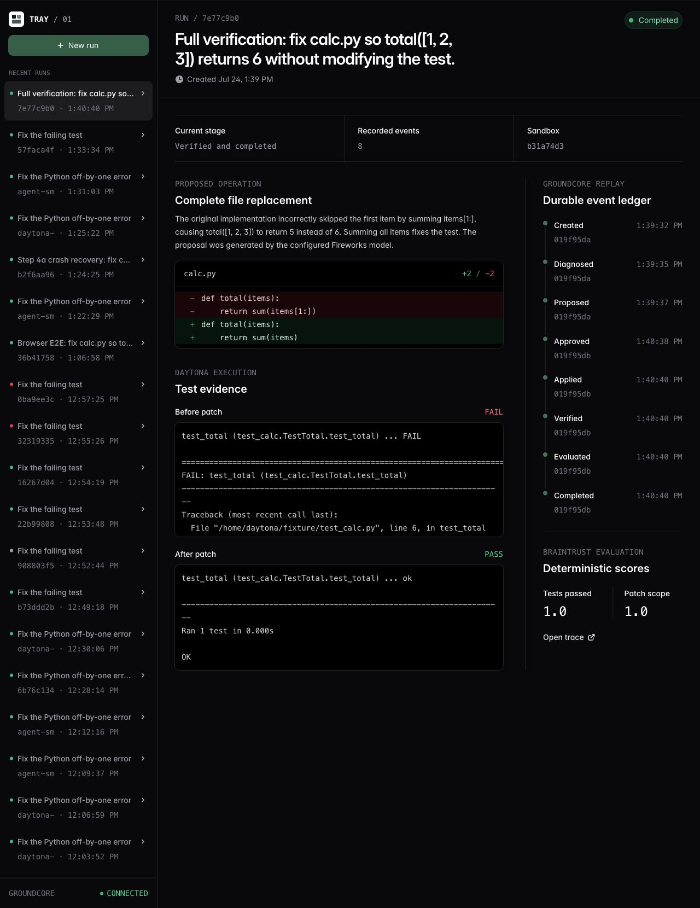
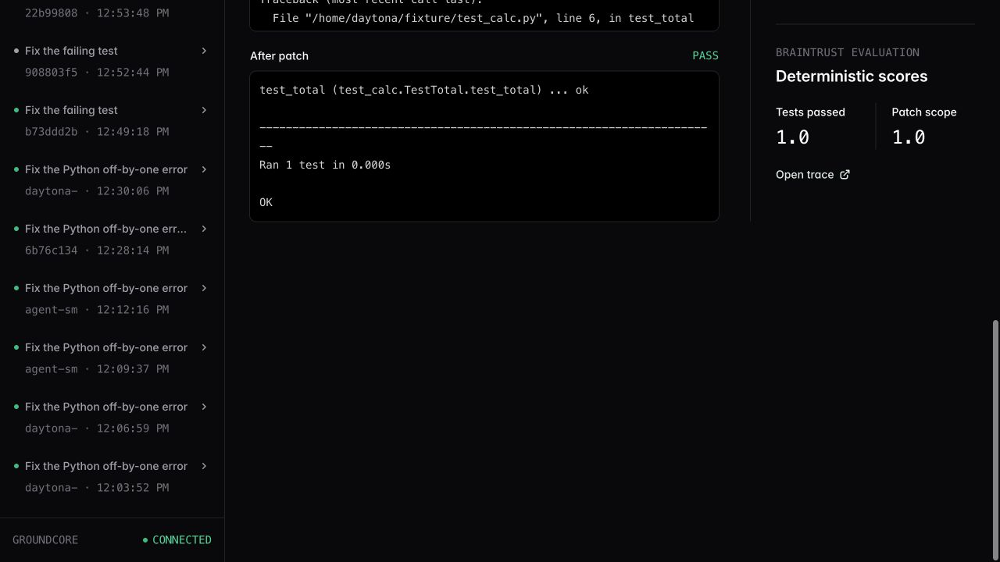
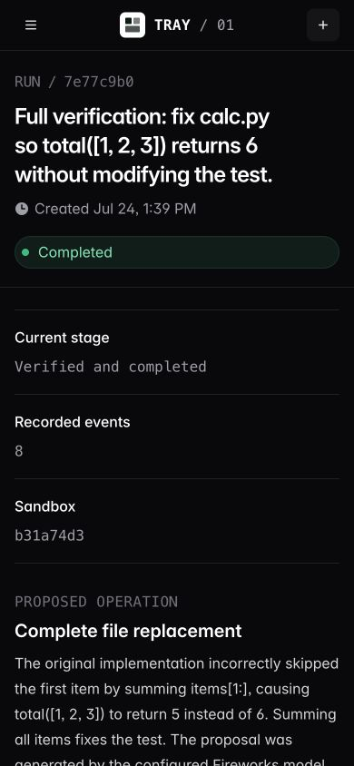
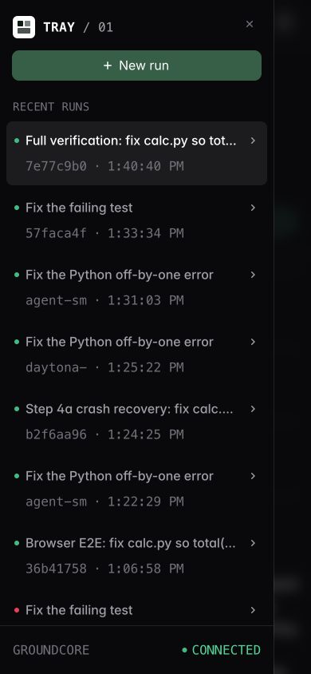
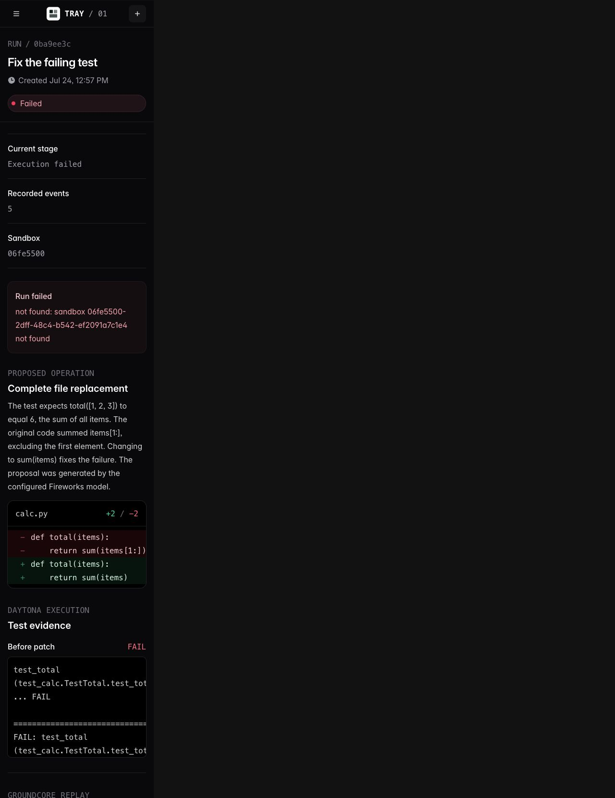

Tray / Full run / 24 July 2026
The pending operation survived the restart and completed from the stored proposal.
A browser-executed evidence report covering diagnosis, live proposal, durable approval, execution, verification, evaluation, and cleanup.
RUN 7e77c9b0-6e54-45f8-add9-c37d0627a3a6
Source: captured live run and local repository verification
Test definition
One complete approval path
The run had to preserve an exact proposed patch through a controller restart, then return verified completion with evidence.
- Task
- Fix calc.py so total([1, 2, 3]) returns 6 without modifying the test.
- Required break
- Stop Tray after proposed and before approved.
- Required recovery
- Reload the browser and reconstruct the same pending operation from GroundCore.
- Required finish
- Apply the stored replacement, pass the test, record two 1.0 scores, and delete the sandbox.
- Integrity checks
- Duplicate event ingestion and full hash-chain verification.
Source: issues/step-4b-evidence-rehearsal.md and the captured run contract
Execution route
Four integrations, one persisted operation
The proposal becomes durable before approval. Every later stage consumes persisted state.
Tray
Creates the run, exposes approval, and folds state from replay.
Daytona
Runs the failing test and hosts the isolated fixture.
Fireworks
Returns one typed propose_patch tool call.
GroundCore
Persists the complete operation and every transition.
Braintrust
Records the trace and deterministic outcome scores.
Source: tray/README.md and verified implementation behavior
Preflight
The product started cleanly
Static checks passed before the live run. GroundCore and Tray were then started from stopped states.
- TypeScript check
- Production build
- GroundCore cold start
- Tray cold start
$ npm run typecheck > tsc exit 0 $ npm run build 333 modules transformed index.js 223.73 kB build completed exit 0
A stale process and socket from an earlier session were stopped and removed before the clean start. No product source files were changed.
Source: command output captured 24 July 2026

Persisted proposal
Approval stopped at event three
3 / 8
Daytona reported 5 != 6. Fireworks returned a typed complete-file replacement. Tray persisted the proposal before exposing Approve or Reject.
- Fallback
- Absent
- Sandbox
- b31a74d3
- Status
- Approval required
Source: browser screenshot and local API response for run 7e77c9b0
Controller restart
Reload restored the same pending operation
Source: screenshots captured immediately before stop and after restart
Authorization contract
Approval covered one exact replacement
The schema restricts the path to calc.py. The stored old_content binds the approval to the diagnosed source state.
After approval, Tray did not call the model again. It replayed the proposed event and applied the stored new_content.
approval target path calc.py old_content exact diagnosed file new_content exact complete replacement
Source: proposed event payload and workflow implementation

Verified completion
All eight stages completed
8 / 8
The stored patch was applied in Daytona. The same unit test changed from FAIL to PASS. No failure was recorded.
Source: completed browser state and replayed event timestamps

Evaluation and cleanup
Evidence closed the run
PASS — the unit test returned OK and the changed-file set remained {"calc.py"}.
Deleted Daytona sandbox b31a74d3-d839-4ac7-8469-1e4fb1d4beb1
Source: evaluated event, browser capture, and Tray server output
Durable storage checks
Retries deduplicated; the chain verified
Identical event retry PASS
$ SMOKE_RUN_ID=fullrun-dup-20260724 \ npm run smoke:eventlog created append duplicate: true proposed append duplicate: true DUPLICATE OK exit 0
GroundCore hash chain PASS
$ groundhog verify --chain 160 events checked chain recomputed from genesis every manifest head matches orphans: [] remnants: [] failure: null exit 0
The duplicate result proves idempotent event ingestion. It does not claim exactly-once execution for arbitrary external systems.
Source: smoke:eventlog second execution and post-run verify --chain output
Responsive visual pass
The completed evidence remains usable at 390 × 844
The run status, stage, event count, sandbox ID, proposal, and navigation remain readable on a mobile viewport.
- Completed-run layout
- Navigation dialog
- 48px mobile interaction targets


Source: browser viewport verification at 390 × 844

Failure-state visual pass
Terminal failures remain explicit
A historical failed run rendered a precise exception — the referenced sandbox was not found — with five durable events and the original proposal still visible.
- Status
- Failed
- Stage
- Execution failed
- Reject control
- Rendered in the primary pending state; rejection was not executed.
Source: read-only inspection of existing run 0ba9ee3c
Verification ledger
Verified, observed, and not executed
| Check | Status | Evidence |
|---|---|---|
| TypeScript + production build | Pass | Both commands exited 0. |
| Live browser workflow | Pass | Eight-event completed run, no fallback, no failure. |
| Restart before approval | Pass | Same run, sandbox, proposal, evidence, and event count after reload. |
| Daytona execution | Pass | FAIL before patch; OK after patch; sandbox deleted. |
| Braintrust evaluation | Pass | tests_passed=1, patch_scope=1, trace linked. |
| Duplicate ingest + chain | Pass | Duplicate true on both appends; 160 events checked. |
| Responsive + failure rendering | Pass | Desktop, mobile, navigation, and failed-state screenshots inspected. |
| Supplemental scripted smoke | Blocked | Environment rejected new authenticated outbound transmission before process start. |
| Supplemental live agent smoke | Not run | Not attempted after the same authorization boundary was identified. |
Source: complete command, browser, server, and policy transcript
Accuracy boundary
The evidence supports a narrow claim
- 01This prototype contains one fixed Python workflow.
- 02Recovery is verified from proposed onward, not before a proposal exists.
- 03Replay-driven resume is idempotent; it is not a general exactly-once guarantee.
- 04The current policy is one file, exact old content, exact new content, and required verification.
- 05The HTTP prototype has no authentication or multi-user authorization.
Supplemental check boundary
Blocked before execution
The environment did not authorize an additional smoke:daytona process that would transmit repository data and authenticated telemetry to external services.
This boundary is documented as blocked, not as a product failure and not as a passing test.
Source: PRODUCT.md scope review and execution-policy result
Conclusion
Verified: the same stored operation returned after restart and finished with evidence.
Run 7e77c9b0 completed all eight events, passed the unit test, scored 1.0 / 1.0, preserved the chain, and deleted its Daytona sandbox.
Prepared from captured evidence. No product source changes were made.